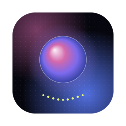

Burrow
The free, open-source Mac cleaner
01
Live
health
of
your
Mac
02
Free
up
gigabytes
safely
03
Find
leftovers
of
deleted
apps
04
One-click
maintenance
05
See
what
fills
your
disk
06
Slim
universal
apps
Burrow
A native Mac app for the Mole cleaner
Free
Open source · GPL-3.0
Native SwiftUI
github.com/khan-umirzakoff/Mole-GUI
Built on Mole by tw93 · unofficial